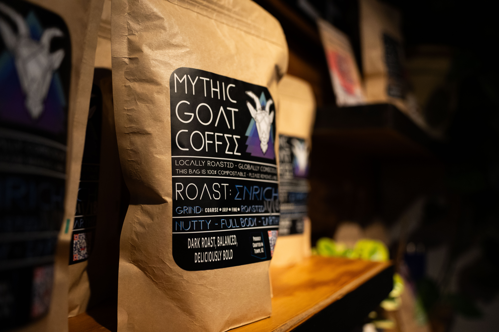

Grounds on 2nd
-

-

-

- 
-

-

-

-

Hours
Monday-Saturday: 7a-8p
Sunday: 7a-1p
Address
3703 N 69th St #1, Scottsdale, AZ 85251
Phone
1-480-590-6489
Description
Grounds on 2nd is a neighborhood coffee shop, beer and wine tasting cafe, and local market. This cafe features low lighting with plants and local art decorating the space.
They offer various coffees, wines, beers, and teas, along with a tasty breakfast and lunch menu. This cafe is situated in a quiet neighborhood in Scottdale on the corner of N 69th St and E 2nd St. It's a bit of an out-of-the-way hidden gem, but one that's worth the visit.
Grounds on 2nd seems to attract people of all cultures and ages. It's not uncommon to meet tourists and travelers there, as well as groups of people coming to hang out or the lone computer dweller.
- Coffee:
- Some of the best good iced and cold lattes in Phoenix. They also offer beers and wines.
- Food:
- The cafe has a breakfast & lunch menu with high-quality, fresh food.
- Wifi:
- The wifi is easily accessible, the password is easy to find and on display within the shop. The wifi works quickly and consistently, it reaches all indoor and outdoor seating with ease, and is great to work on.
- Seating:
- Wide variety of seating, including couches, tables, and bar stools. The seating is spaced out well, but there is not a lot of seating. This usually isn't a problem as this is a smaller cafe with a seemingly smaller audience.
- Atmosphere & Aesthetic:
- The atmosphere is intimate, a little dark, and comfortable. The baristas are really personable, and the decor makes you feel like you're dining in your own backyard. The outdoor area is also really nice; even though it's next to a road, there isn't much road, and the greenery around the cafe helps create a sense of seclusion.
- Parking:
- Parking can be a little confusing; there is free street parking in the front of the cafe, but this is limited to about three spots. If there is more parking at this cafe, it is difficult to find.
- Bathroom:
- They offer one single-stall bathroom that is clean and has plants for air quality and decor.
- Music:
- The music playlists seem to have a wide variety of genres, but all songs carry a lowkey, peaceful vibe. The genres usually range from hip-hop to jazz to indie/folk music.
- Creativity:
- This cafe has a lot of unique artwork and knick-knacks scattered throughout the shop. The use of greenery and plants to decorate is also very impressive.
- Open Late:
- Yes
- Order Online:
- Unknown
- Charging Available:
- Yes